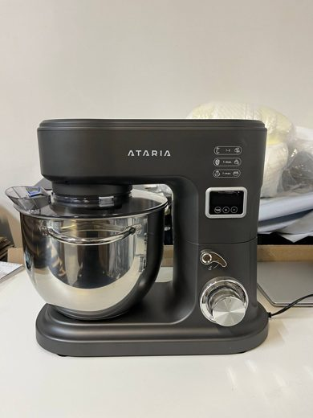
фото1. Спереди, строго в лоб
Светло-серый бесшовный фон, мягкий свет из окна слева, на столе одна сложенная льняная салфетка. Чаша закрыта крышкой от брызг. Простой и честный кадр, как в каталоге.
Сначала утверждаем ракурсы и идеи, потом генерируем. Картинки здесь показывают только ракурс: «фото» — ваш настоящий снимок, «схема 3D» — положение камеры там, где у нас нет фото. Схема неточна по деталям, товар в кадре будет как на ваших фото.

фотоСветло-серый бесшовный фон, мягкий свет из окна слева, на столе одна сложенная льняная салфетка. Чаша закрыта крышкой от брызг. Простой и честный кадр, как в каталоге.
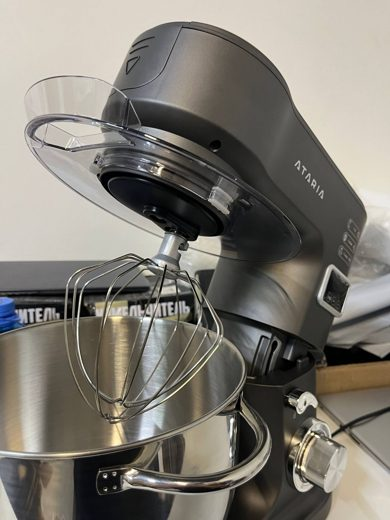
фото (новое)Ракурс 3/4 слева. На голове крюк, в чаше мука и два яйца, всё ещё не замешано. Тёплый беж, свет сверху сбоку. Видно, как устроен комбайн.
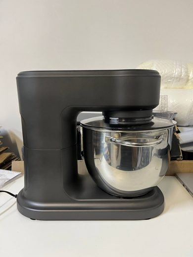
фотоЧистый профиль. На бежевую стену падает длинная тень комбайна от низкого солнца. Больше ничего в кадре нет.
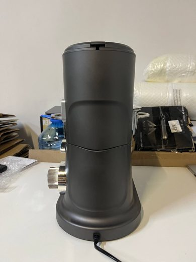
фото (новое)Колонна сзади с плавным швом посередине, шнур выходит внизу и аккуратно уложен. Графитовый фон, контровой свет обрисовывает силуэт. Так комбайн редко показывают.
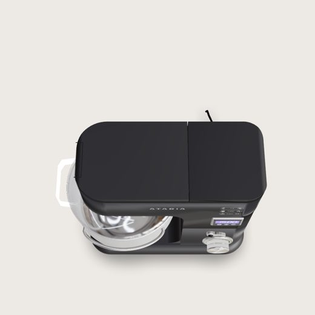
схема 3DСтрого сверху: в чаше мука, крюк, яйцо. Видно стальную чашу и крышку. На светлом камне рядом мука и скалка, кадр как графика.
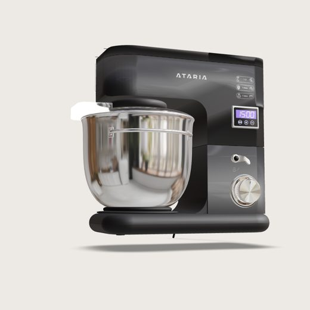
схема 3DКамера на уровне стола, снизу вверх. Комбайн выглядит монументально. Графит, узкий луч света по корпусу.
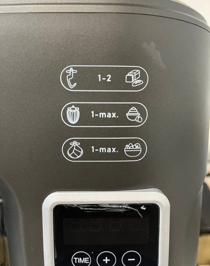
фотоМакро: синие цифры, кнопки TIME + −, подсказки скоростей. Малая глубина резкости, тёплый блик на металле.
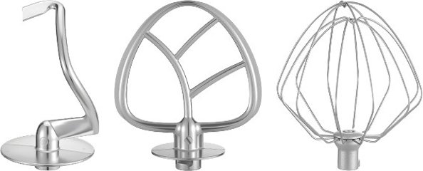
фотоРаскладка сверху на светлом камне, вокруг немного муки. Каждая насадка лежит отдельно с воздухом вокруг, как украшения в каталоге.
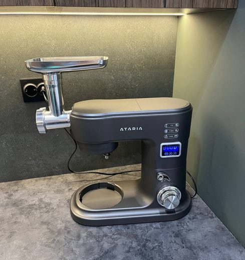
фотоМясорубка на комбайне, крупно 3/4. Рядом доска с куском мяса и миска фарша. Минимализм: серый камень, одна миска, без лишней кухни.
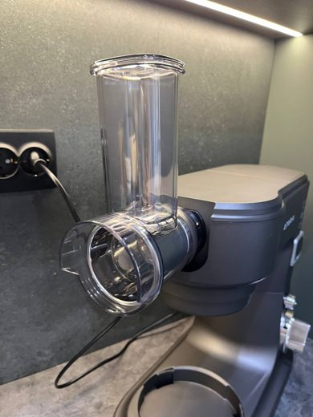
фото + барабаны 13Овощерезка на комбайне, из неё в белую миску падают кружки моркови и огурца. 3 барабана лежат рядом. Светлый фон.
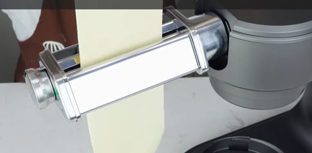
фото (новое)Гладкий валик с ручкой регулировки толщины на 8 положений, стоит на боковом порту. Из неё выходит тонкий широкий лист теста. Светлый камень, немного муки, мягкий свет.
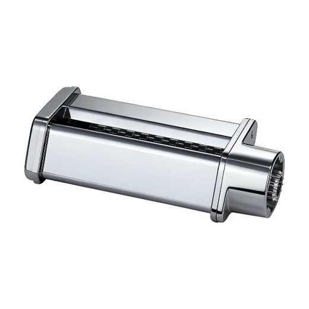
фотоНасадка с зубчатыми ножами, без регулировки. Из неё выходят ровные полоски лапши для лагмана, ниже на доске гнёзда готовой лапши. Тёплый свет.
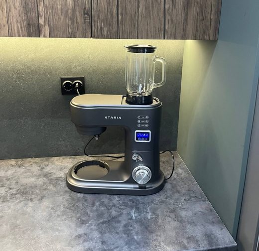
фотоТот, что вам понравился, но в минимализме: светлый фон, одна стеклянная колба со смузи и один стакан. Ручку скоростей сверяю с вашим фото крупным планом.
Из первой серии оставляю макро ручки скоростей. Остальное заменят эти 13 кадров. Цена: около 26 кредитов Higgsfield плюс переделки, на балансе 986. Напишите номера, которые убрать или изменить, или «ок» — и я начну.